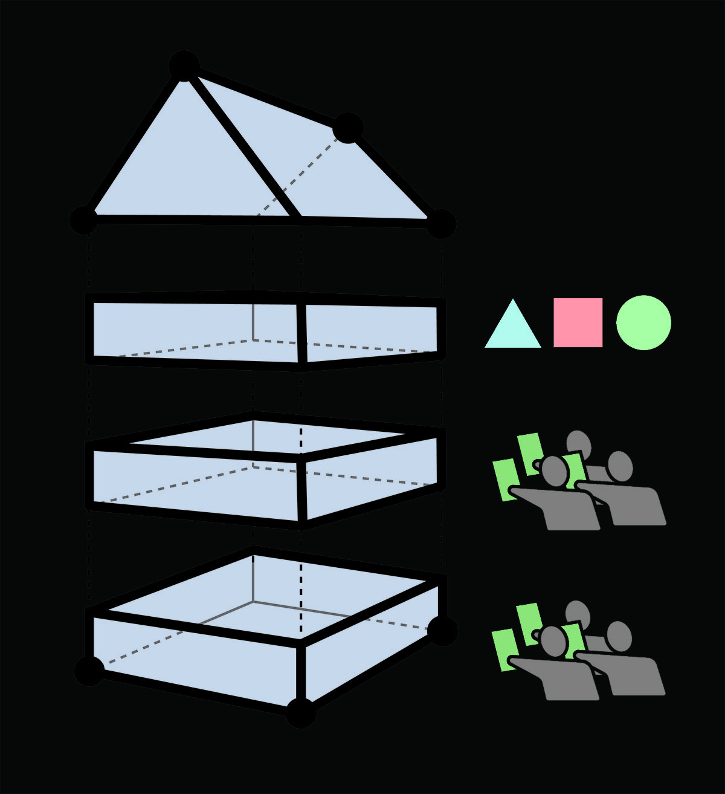

The Spectacle Conglomerate:
A Transnational Gentrification Agency
by Waldo E Walle
We are the Spectacle Conglomerate, and we can't pay rent
The Spectacle Conglomerate is a transnational agency of artists, designers, architects, urbanists, musicians, cooks, etc. In other words, of experts in activating space, that are sick of their practice is being utilized for the purposes of gentrification displacement and believe that an affordable city goes hand-in-hand with a culturally vibrant city.
Envisioning the future
The Spectacle Conglomerate believes that modernity’s final stage is the democratized access to the permanent reimagining, remaking and consumption of culture.
How will we get there?
We will develop an infrastructure capable of creating and capturing all the profits generated by cultural production in order to expand collective forms of land, property, and production ownership which offer the sanctuary spaces necessary to break free from the destructive contradictions of economic growth that continually destroy cities vibrancy by accumulation by dispossession.
What are the strategies of the Spectacle Conglomerate?
Collective Network
The first step is to build vast networks of spectacle producers who align and are willing to collaborate to our envisioning of the future. As well as utilizing already existing informal networks such as musician touring networks, DJ networks, artist networks.
-
Collective Land
The second step is to situate spectacle producers in collectively owned space that will enable to capture profits to further reinvest in the expansion of collectives. During the process we will draw private real estate competitors, that will hinder our expansion. Therefore it is important to collaborate early on with local residents in order to build resilience in the gentrification process that will come about, hence bringing opportunities in expanding available space early on.
- Collaborate with already existing collectives which own their property, some examples: Community land trust, housing cooperatives, mixed-use buildings, co-housing and communes.
- If no collaborations are possible, then the Spectacle Conglomerate will form artist corporations that will enable to collectively own land.
Building the Machine
Once a plot or plots of land are self-secured by the Spectacle Conglomerate it is time to build the machine that will enable expansion of our collective platform. The Machine is comprised of three essential partitions: Affordable housing + Market priced housing + Spectacle spaces. Through the means of spectacle we will create monopoly rents which will be captured through our Market priced housing partition.
Activating Space
Once the machine has been built, the Spectacle Conglomerate will utilize the collective property as platforms for the production of spectacle. Accumulating cultural production such as food, music, galleries, popup stores, performance dance and theatre.
Expand Assets and more Space
Once profits have been captured, the Spectacle Conglomerate will utilize the profits to reinvest in the collective
- Infrastructure and maintenance that cannot be accomplished by sweat equity.
- Collective expansion (more affordable housing, market priced rentals or spectacle production)
- Market expansion into other neighborhoods or cities.
- Building collective assets that will cut down expenses of the collective such as production and food. Production Platforms: by creating mixed use spaces co-working spaces, connect and collaborate with other art-design collectives that align to our mission and create symbiotic relationships with small-scale manufacturing collectives such as makerspaces, fablabs and techshops as they will serve as the central pillar of the spectacle. These will also provide the possibilities of residencies and incubators that will facilitate new forms of spectacle or the expansion of collective power. Smaller scale food production in the city is an area worthy of research, investing in food production largely depends where you are localized. If no expansion is possible then hopefully by then, it would have built the collective assets necessary to reproduce itself outside of profits.
Conclusions and Reflections
It is clear that the Spectacle Conglomerate approaches a solution for a healthier reproduction of the arts by working within the existing system. Nonetheless it is also important to account for political power by fighting for city rights that enable better mixed use of spaces and affordability throughout all the necessities for society reproduction (therefore not only its housing). The Spectacle Conglomerate was devised with a pessimistic view of the future of a neoliberal cities that only enables spaces for pure consumption such as high-rise luxury condominiums, coffee shops, brunch places and shopping malls. Therefore it was devised with the objective of taking matters into our hands and instead to start building what Lefebvre called the “right to the city” which the Spectacle Conglomerate redefined to the right for permanent reimagining, remaking and consumption of culture.
It is my belief that it would be a weak strategy to fight for the right for cultural production solely through politics. Both strategies are equally as important. I believe that the value of the Spectacle Conglomerate is that it imagines a system that is capable of existing throughout generations through the form of a corporation, or a Community Land Trust model, rather than having to constantly renegotiate spaces for cultural production with private landlords.
It is fair to say that an idea like this could expand greatly because of the vast networks and mobility of artist across different cities, which offers the possibility to imagine collective hubs across all major cities that are part of the Spectacle Conglomerate. Plenty of artists and collectives are already aware of the spatial implications of their actions, therefore many trends of surrounding spaces are visible throughout major cities. One of such trends is the maximizing the programmings in a space which enables to connect the space with a broader audience of producers and consumers of culture that will be able to belong to the spectacle Conglomerate.
Thus I believe that this is a solid foundation for further exploration. The Implementation of a project like this still raises questions about who’s spectacle? Since it is clear there are trends, and that fighting for the democratized access to production and consumption of spectacle must therefore enable every spectacle. Also further exploration to its profit driven expansion is necessary, in order to keep expanding the collective needs to clearly define inside and outside the cooperative. Therefore it needs to be accompanied with a progressive business model.
Theaster Gates, another artist already building collectives through corporations, simply put it: “it had to be privately owned space so that people couldn’t tell us what the fuck we could do.”